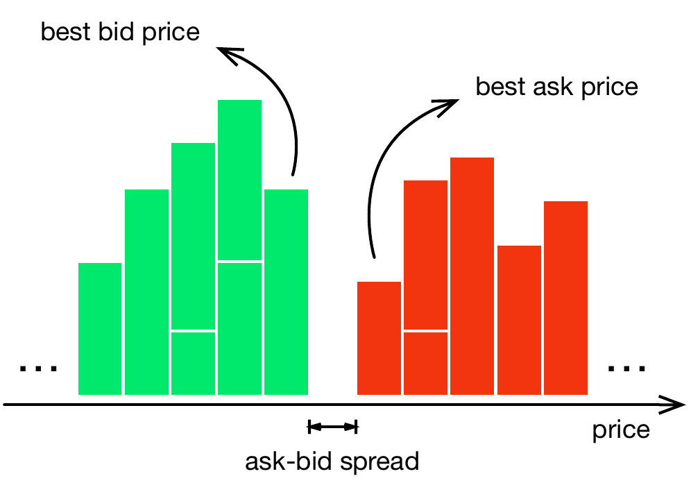
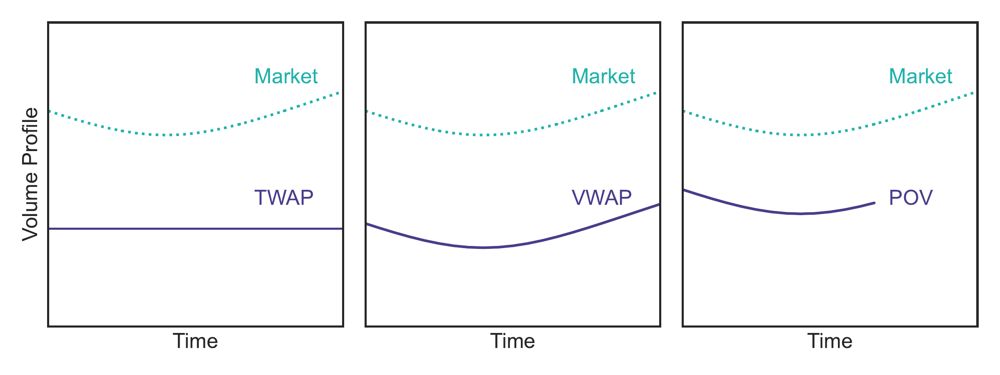

3 算法交易
量化投资的另一个核心部分是算法交易。 早期的股票和其他金融工具的交易通常是在交易所的交易厅内进行， 交易员需要通过电话、传真或者面对面的方式进行现场交易。 然而，这些传统交易方式不仅效率低下，还容易受到信息不透明和人为操纵的影响。
1971年，美国纽约诞生了首个电子交易所——纳斯达克（Nasdaq）。 电子交易平台和电子通讯网络（ECN）的出现， 使得交易员可以通过计算机进行交易，无需亲临交易所。 到了1990年代，几乎所有的证券交易都转移到了更快速、更高效的电子交易平台， 这为算法交易的兴起创造了必要的条件。
市场参与者为了降低交易成本、抵御市场冲击， 开始采用计算机制定的交易策略，并通过互联网完成交易， 这极大地提升了市场交易效率。 做市商市场交易规则的改变和北美开放市场中的套利机会， 进一步推动了高频交易的发展(CHRISTIE et al., 1994; CHRISTIE & SCHULTZ, 1994)。 高频交易的兴起，又进一步改变了市场结构(O’Hara, 2015)。 如今，大多数量化投资策略都是通过计算机算法在市场上执行交易的。
与传统的人工交易方式相比，算法交易具有多重优势，例如：
- 高效的执行效率： 算法交易能够在纳秒级别内执行交易，降低人工交易成本， 并且避免人工交易犯错的可能性。
- 快速的决策速度： 算法交易可以迅速识别和利用市场变动， 从而避免错过有利的交易时机。
- 较低的情绪影响： 算法交易能够严格执行交易策略， 从而避免人为因素给策略带来的情绪性干扰。
- 多策略的综合运用： 算法交易可以同时应用多种交易策略， 这些策略可以基于市场数据、统计模型、技术分析等多种因素， 从而降低单一策略带来的风险。
- 实时风险管理： 算法交易可以实时监控市场变动， 从而进行及时的风险管理。
虽然算法交易具备以上优势，但是自其诞生以来也一直伴随许多争议(Foucault, 2012)， 争议的主要内容包括：对市场流动性的影响(Ammar et al., 2020; HENDERSHOTT et al., 2011; S. Li et al., 2021)， 在市场波动时高频交易会不会引起流动性损失； 对价格波动的影响(Arumugam et al., 2023; Scholtus et al., 2014)； 是否使价格趋近其真实价格，从而使市场更有效； 高频交易者的利润是否来源于传统交易者，从而损害了传统交易者的利益， 高频交易是否是知情交易(Anagnostidis et al., 2020)； 算法交易是否会引起或加剧市场闪崩， 从而在市场危机时增加流动性损失的风险(KIRILENKO et al., 2017)； 市场是否会由于算法交易的引入而更容易出现价格操纵； 市场的组织形式是否应该针对高频交易者进行更改、 对数据的纰漏是否应该更加公开、对高频交易者是否应该单独制定收费机制等。
综上，算法交易的发展，不仅展现了技术进步给金融市场带来的机遇， 也突显了其在市场稳定性和透明度方面的新挑战。
3.1 市场微观结构
市场微观结构是一门研究交易在金融市场内的组织形式和详细机制的学科(Easley, 2013; Hasbrouck, 2007; O’Hara, 1997)。 通过对所有市场参与者在市场内发生的粒度级别的交互和动态进行分析， 市场微观结构试图解释价格形成和发现、分析交易成本、并完善市场的组织结构等。 了解市场微观结构对于算法交易策略的制定至关重要，
3.1.1 交易数据的组织形式——限价订单簿
市场微观结构的研究建立在粒度级别的交易数据之上， 其最重要的组织形式是限价订单簿（Limit Order Book，LOB）。
交易所接受的订单通常可以分为两类： 市价订单（Market Order）与限价订单（Limit Order）。 市价订单是指以当前市场上的最优价格立即成交的订单， 限价订单是指以不劣于交易员规定的价格成交的订单。 限价订单簿就是一种系统化排列限价订单的数据组织形式。
图3.1是限价订单簿在某一时刻的快照示意图。 绿色、红色分别为买方、卖方委托量随报价的分布。 买方最高报价与卖方最低报价之差为买卖差价（ask-bid spread）。 当新的限价委托提交时，会排列到相应价格的队列之后。 成交时一般采取“先进先出”的模式（FIFO，First In First Out）， 即同样的价格先委托的先成交。 当市价单到达时，会根据限价单的最优报价进行撮合， 当最优报价全部成交后，市价将产生变动。

Figure 3.1: 限价订单薄。
A股交易数据的组织形式
中国有上海和深圳两个证券交易所，其数据组织形式大体相同。 上交所提供Level-1和Level-2两档数据， 对应深交所的基本行情与增强行情。 Level-2的实时行情包含快照类数据以及逐笔数据。 其中，逐笔成交数据包括每一笔成交的证券代码、成交时间、成交价格、成交数量、成交金额、 成交序号、成交通道、买方订单号、卖方订单号以及内外盘标志。 逐笔委托数据包括每一笔委托的证券代码、委托时间、委托价格、委托数量、委托序号、 委托通道、原始订单号以及内外盘标志。 快照类数据（限价订单簿）每3秒更新一次， 包括了每支证券的代码、昨收盘价格、开盘价格、最高价格、 最低价格、 最新价格、收盘价格、成交笔数、成交量、成交金额、 委托买入总量、加权平均 委买价格、委托卖出总量、加权平均委卖价格、 买入总笔数、卖出总笔数、买卖 10 档价格和数量等 2。
| ID | Time | Price | Ask Price | Ask Volume | Bid Price | Bid Volume | Volume | Turnover |
|---|---|---|---|---|---|---|---|---|
| 600703.SH | 09:35:11 | ￥324.70 | ￥324.80 | 700 | ￥324.60 | 500 | 7123769 | ￥232,356.81 |
| 600703.SH | 09:35:14 | ￥325.00 | ￥325.00 | 200 | ￥324.90 | 4500 | 7176769 | ￥234,078.39 |
| 600703.SH | 09:35:17 | ￥325.00 | ￥325.30 | 400 | ￥325.00 | 1200 | 7217769 | ￥235,410.71 |
| 600703.SH | 09:35:20 | ￥325.40 | ￥325.50 | 17000 | ￥325.40 | 12400 | 7242469 | ￥236,213.71 |
| 600703.SH | 09:35:23 | ￥325.60 | ￥326.00 | 200 | ￥325.60 | 11800 | 7290369 | ￥237,773.62 |
| 600703.SH | 09:35:26 | ￥326.20 | ￥326.30 | 600 | ￥326.10 | 4800 | 7373469 | ￥240,479.98 |
A 股市场的特点
A 股市场与全球其他股票市场的重要区别之一是采取次日交易日起回转交易， 即“ T+1 交易规则”。 该规则不允许投资者在同一天卖出当天买入的股票。 但是在持有底仓的情况下，仍然可以在效果上实现“ T+0 ”交易。 A 股市场的另一个显著特点是设置了 10% 到 20%（科创板） 的涨跌停阈值， 某支股票达到该阈值后会强制停止竞价。 此外，A 股市场不可以直接卖空股票，无法直接利用做空进行风险对冲（需通过融资融券）。 上述规则在一定程度上抑制了市场上的投机行为， 保护了A 股以``散户’’为主的大部分参与者的利益(M. Guo et al., 2012)。
3.1.2 市场微观结构理论
随着金融市场的不断开放与完善、 市场交易数据的不断累积、以及数据形式的不断增加， 市场微观结构理论的复杂性在不断提高， 因此，目前该领域并没有一个被广泛认可的模型。
市场微观结构的研究可以分为三代(Lopez de Prado, 2018)。 第一代模型是价格序列模型，仅采用了价格信息， 较早期的模型有交易分类模型和Roll模型。 第二代模型增加了交易量数据，研究的方向转移到了交易量对价格的影响， Kyle (1985) 和 Amihud (2002) 是这一代的两个代表性模型。 第三代模型始于知情交易概率理论（Probability of Informed Trade, PIN）的建立 (EASLEY et al., 1996; Easley et al., 2002)， PIN理论认为买卖差价是做市商（提供流动性） 和知情交易者（持有头寸）之间连续性博弈的均衡结果。
假设证券价格为\(S\)，现价为\(S_0\)。 价格受到新信息的影响后变为\(S_B\)（坏消息）与\(S_G\)（好消息）。 假设新信息的到达率为\(a\)， 是坏消息的概率为\(\delta\)，是好消息的概率为\(1-\delta\)。 那么\(t\)时刻，价格的期望值为， \[\begin{align} E(S_t)=(1-\alpha_t)S_0 + \alpha_t [\delta_t S_B + (1-\delta_t)S_G] \ . \end{align}\] 若报单行为服从泊松分布， 知情交易者的报单到达率为\(\mu\)， 非知情交易者的报单到达率为\(\epsilon\)， 那么，做市商与知情交易者之间经过博弈后， 达到买卖差价的盈亏平衡点为， \[\begin{align} E(A_t-B_t) = \frac{\mu \alpha_t(1-\delta_t)}{\epsilon + \mu \alpha_t(1-\delta_t)} (S_G-E(S_t)) + \frac{\mu \alpha_t\delta_t}{\epsilon+\mu \alpha_t \delta_t} (E(S_t) -S_B)\ . \end{align}\] 当\(\delta_t=1/2\)时，买卖差价的盈亏平衡点为， \[\begin{align} E(A_t-B_t) = \frac{\alpha_t\mu}{\alpha_t\mu+2\epsilon}(S_G-S_B)\ . \end{align}\] 式中，\((S_G-S_B)\)的系数决定是盈亏平衡点的关键因素， 定义为知情交易概率PIN， \[\begin{align} PIN_t = \frac{\alpha_t\mu}{\alpha_t\mu+2\epsilon} \end{align}\] 通过拟合\((\alpha, \delta, \mu, \epsilon)\)可以得到PIN的值。
3.2 交易成本分析
交易成本分析（Transaction Cost Analysis，TCA） 是评估交易策略及执行流程效率和有效性的重要工具。
3.2.1 交易成本构成
交易成本包含直接成本和间接成本两部分 (R. Almgren & Chriss, 2001; Arnott & Wagner, 1990; Bertsimas & Lo, 1998; Freyre-Sanders et al., 2004; Loeb, 1983; Rosenthal, 2009; Wagner & Edwards, 1993)。
直接成本是与执行交易直接相关的明确、可测量的费用， 包括佣金（commissions），交易所费用，税金等。 这些费用是在交易发生后，由交易所、交易商及税务部门直接收取的费用。 A股市场的佣金对个人交易者通常在2-3bps，单笔最低5元， 对机构交易者可以更低。 印花税为10bps，2023年底减半征收，目前为5bps，仅对卖家征收。 此外，上海证券交易所还会对每笔交易征收0.1bps的过户费。
间接成本是不太显而易见的成本，也是交易成本分析的主要研究对象。 间接成本主要包含： （1）市场冲击（Market Impact）。 市场冲击是指交易自身导致的价格向交易方向不利的变动。 （2）机会成本（Opportunity Cost）。 机会成本是由于流动性丧失导致无法交易时产生的成本。 （3）时间延迟成本（Delay Cost）。 时间延迟成本是由于时间延迟导致成交前市场价格发生变动时产生的成本。 （4）价格漂移成本（Price drift）。 价格漂移是指证券价格在交易期内发生的异动， 即该时间段内的\(\alpha\)。 价格漂移成本是在证券价格异动时买卖股票造成的额外成本。 （5）择时风险（Timing Risk）。 择时风险包含了价格波动和流动性风险， 波动异常或流动性降低都会显著影响交易成本。 （6）买卖差价（ask-bid spread）。 当交易者需要在市场上立即成交时， 通常需要以支付买卖差价作为代价。 这些间接成本虽然不会立即显现，但可以显著影响交易绩效。
对于大宗交易，市场冲击是影响交易成本最重要的因素。 市场冲击的种类并非单一，其构成较为复杂。 通常可以将市场冲击分为临时市场冲击和永久市场冲击两类(R. F. Almgren, 2003)。 临时市场冲击是交易者在市场上获取流动性所产生的冲击， 流动性越低，临时冲击越大； 永久市场冲击是由于交易者的交易意图暴露在市场中导致的永久性价格变动， 通常表现在订单簿的买卖失衡， 买卖失衡直接影响供需关系，从而永久改变证券价格。 除了构成复杂，市场冲击的形式在不同市场间也存在差异 (Bacry et al., 2015; Farmer et al., 2005; Han et al., 2018; Lillo et al., 2003; Moro et al., 2009; Potters & Bouchaud, 2003; Said et al., 2020)。 上面的各种因素造成了市场冲击理论的多样与复杂(Guéant, 2013; Tóth et al., 2011)， 不仅如此，有实证研究表明市场冲击理论与实际交易之间存在一定差距 (R. Almgren et al., 2005; Frazzini et al., 2018)。
3.2.2 交易执行缺口
交易成本分析中的一个重要概念是执行缺口(Perold, 1988) （Implementation Shortfall，IS）。 执行缺口是预期回报（Paper Return）与实际回报（Actual Return）之差。 假设待交易的股票数量为\(S\)， 预期回报由决策价格（decision price）\(P_d\)和交易结束时的市场价格\(P_n\)决定， \[\begin{align} PR = S(P_n-P_d) \end{align}\] 实际回报， \[\begin{align} AR = \sum s_i P_n - \sum s_i p_i - fees\ , \end{align}\] 其中，\(s_i\)，\(p_i\)分别为第\(i\)笔交易的数量及价格， \(fees\)代表交易产生的固定费用。 则执行缺口为， \[\begin{align} IS = S(P_n-P_d) - \sum s_i (P_n - p_i) + fees \ . \end{align}\]
（1）如果交易全部完成，则有，\(\sum s_j=S\)。 此时的执行缺口， \[\begin{align} IS = S(P_a - P_d) + fees\ , \end{align}\] 其中，\(P_a= \sum s_i p_i / S\)为交易执行的平均价格。
(2)如果交易没有全部完成，\(\sum s_i\neq S\)， 此时的执行缺口可以写为， \[\begin{align} IS = \sum s_i (P_a - P_d) + \left(S-\sum s_i\right)(P_n-P_d) + fees \tag{3.1} \end{align}\] 式中第一项为交易的执行成本， 第二项是由于交易未完成所产生的机会成本。
(3)考虑到决策与交易间的延迟， 决策价格与到达价格(Arrival Price)之间通常存在差异。 改写\(P_n-P_d=(P_n-P_0)+(P_0-P_d)\)，其中 \(P_0\)为到达价格。 此时的执行缺口可以写为， \[\begin{align} IS = S(P_0-P_d) + \sum s_i (P_a - P_0) + \left(S-\sum s_i\right)(P_n-P_0) + fees . \end{align}\] 公式(3.1)中的交易执行成本和机会成本中， 各有一部分被分解合并到了延迟造成的成本中，即上式第一项。 第二项、第三项对应修正后的交易执行成本和机会成本。
(4)通常决策价格是由组合经理决定的， 与算法交易和交易执行期间的市场活动本身无关， 剔除这部分影响后的执行缺口为， \[\begin{align} IS = \sum s_i (P_a - P_0) + \left(S-\sum s_i\right)(P_n-P_0) + fees \tag{3.2} \end{align}\] 式中第一项为交易执行成本，第二项为机会成本。
3.2.3 交易执行结果评估
公式(3.2)中的第一项是与交易执行直接相关的成本， 代表交易者希望以开始下单时的市场价格(到达价格)成交时， 所需支付的交易执行成本。 在限价订单簿中，到达价格通常取当时买卖价格的中间值。 这里的到达价格可以看作交易选取的基准价格。 更一般的，交易成本（trading cost, TC）取决于 交易执行价格（execution price） 与基准价格（benchmark price）之差。 以基点（base points，bps）为单位的交易成本为， \[\begin{align} \rm trading\ cost = side \cdot \frac{execution\ price-benchmark\ price} {benchmark\ price}\times 10,000\ (bps) \ . \end{align}\] 其中，交易方向为买时，\(\rm side=+1\)， 交易方向为卖时，\(\rm side=-1\)。 对于订单拆分，交易执行价格为平均价格\(P_a\)。 基准价格可以根据不同的交易和分析目标进行选取， 例如到达价格（Arrival Price）、 TWAP、VWAP、收盘价格等。
目前市场上最常用的基准价格是VWAP（Volume- weighted average price）。 VWAP是按照证券交易量加权后的市场平均价格： \[\begin{align} {\rm VWAP} = \sum_i P_i V_i /\sum_i V_i\ . \end{align}\] 但是，使用VWAP存在一些局限(R. L. Kissell, 2021)： 首先，订单越大，结果会越接近 VWAP 价格。 极端情况，当交易时段市场参与度为100%时，那么交易的结果就等于VWAP价格。 其次，当在不同交易所进行大宗交易，特别是交易者仅有有限机会参与交易时， 用VWAP作为基准，结果可能会有偏差。 第三，VWAP 的结果会受到波动率等因素的较大影响， 因此不便于比较不同股票、或同一股票在不同日期间的交易结果。
参与度加权价格基准（Participation-Weighted Price， PWP） 是按照市场参与度，计算得到的对应市场成交量的VWAP： \[\begin{align} \text{ PWP = market VWAP for volume V , where V=S/POV .} \end{align}\] 其中，S代表需要完成的交易量，POV为预设的市场参与度， V是交易开始时到市场累计完成V=S/POV时的交易量。 与VWAP基准类似，PWP同样不适合进行跨股或跨日的比较。 此外，投资者有可能通过更激进的交易操纵PWP。 由于市场冲击的影响，投资者可以通过在短时间内推高买单（推低卖单）价格， 造成后续仍有大量交易的假象，并将价格维持在较高（较低）水平。 此时，PWP需要更长的等待时间以满足市场交易量的需求， 导致计算出的PWP向对投资者更有利的方向移动， 而无法反应订单在实际交易时的市场价格。
上面的基准都包含了市场或行业的总体波动， 在市场上升或下降时交易股票会使计算的交易成本偏离预期。 经过市场调整后的成本， 可以将交易执行成本与证券价格随总体市场波动的部份分开(R. Kissell, 2008)。 \[\begin{align} \rm adjusted\ trading\ cost = trading\ cost - \beta \times market\ cost\ . \end{align}\] 其中，\(\beta\)为证券对市场的载荷， 市场成本为， \[\begin{align} \rm market\ cost = side\cdot \frac{market\ VWAP - market\ arrival\ price}{market\ arrival\ price} \times 10,000\ (bps)\ . \end{align}\] 市场成本通常选择相应的市场或行业指数进行计算。
3.3 传统算法交易策略
假设算法需要在交易时长\(T\)内完成交易量\(V\)， 为了完成交易并降低市场冲击，交易者需要将订单进行拆分。 传统的拆分方式有时间加权平均价格（Time-weighted Average Price，TWAP）、 交易量加权平均价格（Volume-weighted Average Price，VWAP）， 成交量百分比（Percent Of Volume，POV）等。
3.3.1 TWAP
TWAP是交易量随时间均匀分布时，所有成交价格的简单算数平均。 假设订单在交易时间段内被均匀拆分为\(N\)份， 且拆分后第\(i\)份子订单的成交价格为\(P_i\)， 那么该订单的时间加权平均成交价格为， \[\begin{align} \mathrm{TWAP}=\frac{1}{N}\sum_{i=1}^{N} P_i\ . \label{eq:twap} \end{align}\] 虽然将订单等时拆分很方便，但这种交易方式比较容易被交易对手嗅探。 因此，为了不被市场察觉，交易者往往需要将订单拆分到足够小。 此外，也有算法对交易时间甚以及交易量在TWAP的基础上加上随机扰动，以隐藏交易意图。
3.3.2 VWAP
全市场的VWAP常被看作公平市场价格（fair market price）， 因此常被用于算法交易的基准价格。 VWAP算法的实质是追踪全市场的VWAP。 假设订单被拆分为\(N\)份，每份成交量为\(V_i\)，成交价格为\(P_i\)， 那么该订单的交易量加权平均成交价格为， \[\begin{align} \mathrm{VWAP}=\sum_{i=1}^N P_i V_i/\sum_{i=1}^N V_i\ . \label{eq:vwap} \end{align}\] 其中每份成交量\(V_i\)通常根据对应时间段内的历史成交量曲线，按照一定比例进行分配。
由于真实市场的交易量在随时变化， 实现VWAP难点之一是市场交易量分布的计算和预测。 另外，交易频率的选择也至关重要， 合理的交易频率的可以有效的隐藏自己的交易意图，降低市场冲击。 VWAP算法有许多变体 （例如：Konishi (2002), Gomber et al. (2008), Biakowski et al. (2008), J. McCulloch & Kazakov (2012), Frei & Westray (2013), Mitchell et al. (2013), Busseti & Boyd (2015), Cartea & Jaimungal (2016), Barzykin & Lillo (2019)）， 是目前市场上应用最广泛的算法之一。
3.3.3 POV
市场参与度POV（Percent of Volume）是指按照市场当前成交量的固定百分比参与交易的算法。 与TWAP一样，POV一般将交易时段进行等时划分， 其成交量由市场动态调节。 对于第\(i\)期交易，POV算法参与的订单量\(S_i\)为， \[\begin{align} S_i = POV \cdot (V_{market,i-1}-S_{i-1})\ . \end{align}\] 其中，POV为预设的百分比，\(V_{market, t-1}\)为上一期市场的交易量， \(S_{t-1}\)为上一期算法自身成交量。 POV算法在执行大量订单时可以有效隐藏自己的交易信息， 也是目前被广泛使用的算法之一。
上述介绍的三种算法都是被动算法。 图3.2展示了这三种算法相对市场交易量随时间的分布示意图。 他们的实现相对容易，但可能损失的机会成本较大。

Figure 3.2: TWAP、VWAP及POV相对市场交易量随时间的分布示意图。
3.3.4 其他算法
除了上述算法，市面上还有针对私人交易所设计的 暗池算法(Buti et al., 2017)（“Dark Pool”）， 隐藏部份订单量的冰山算法(Moinas, 2005)（“Iceberg”）， 配对交易算法(Gatev et al., 1999)（Pair Trading）等。
除了这些传统算法， 随着人工智能的发展， 越来越多的交易者开始借助机器学习、 深度学习和强化学习等技术制定自己的交易策略。